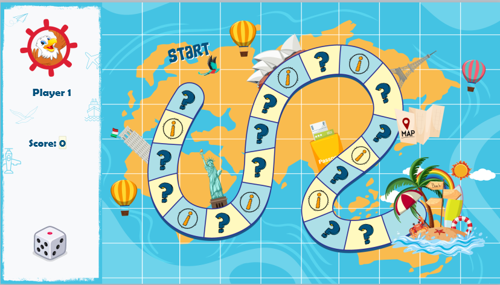
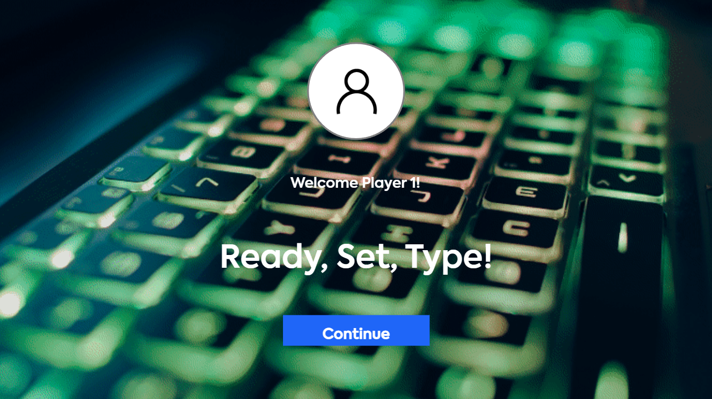
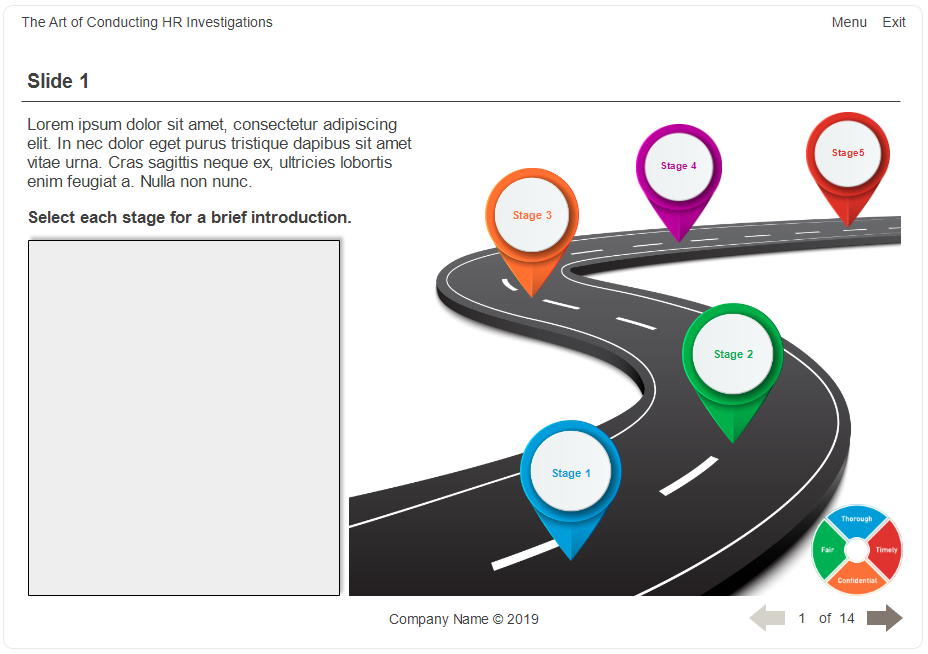

Home
Joel Carmona — eLearning Developer & Instructional Designer
Laguna, Philippines
As an eLearning Developer and Instructional Designer, I specialize in crafting engaging, tech-driven learning experiences that blend instructional clarity with creative design. With a strong foundation in digital education and a passion for purposeful storytelling, I transform complex concepts into accessible, learner-centered content that resonates across platforms.
My approach is rooted in both innovation and empathy—balancing technical precision with human connection to ensure every module, course, or resource supports meaningful growth. Whether collaborating with teams or working independently, I bring a proactive mindset and a commitment to excellence in every phase of development.
Beyond the workspace, I’m a proud father who finds balance through sports like billiards, table tennis, and basketball—activities that keep me energized and focused. This blend of creativity, discipline, and play informs my work and fuels my drive to create impactful learning solutions.
Let’s give something back to nature before it takes everything back from us. — Earth
About
My path into eLearning wasn’t linear—it started with code. As a Junior Developer, I immersed myself in HTML, CSS, JavaScript, . Net, and databases, building digital systems and learning how structure shapes experience. But the more I worked behind the scenes, the more I realized my real passion was helping people learn—not just through clean interfaces, but through meaningful, intuitive design.
That realization led me into instructional design, where I could blend technical know-how with human-centered storytelling. I began crafting interactive modules and simulations that didn’t just deliver content—they invited learners to explore, reflect, and apply. Over time, I’ve worked across industries—from medical and dental to pharmaceutical, airline industry, business and finance, educational, and vocational—each one sharpening my ability to translate complex ideas into accessible, engaging learning experiences.
Today, I bring a collaborative mindset to every project, refining UI labels for multilingual teams, mapping workflows with accessibility in mind, and always asking: how can this be clearer, kinder, and more effective for the learner
Skills
I specialize in building high-impact learning experiences that merge instructional clarity with technical precision. My toolkit includes industry-standard authoring platforms like Articulate Storyline, Adobe Captivate, and Rise—paired with front-end skills in HTML, CSS, and JavaScript to customize content and integrate seamlessly with LMS platforms such as Canvas and Moodle.
Beyond functionality, I bring a strong visual design sensibility to every project. Using tools like Photoshop, Premiere, and Figma, I craft media-rich course elements that elevate engagement and accessibility. Whether I’m prototyping a simulation, refining UI for multilingual learners, or designing responsive layouts, I focus on delivering learning that’s intuitive, inclusive, and visually compelling.
Proficiencies in Tools and Technologies
Experience
With over a decade of experience in eLearning and development, I’ve led the design and delivery of impactful learning solutions for global clients including Xerox / Conduent, Johnson & Johnson, Intelitek, Dentsply Sirona, and Ibex Global Solutions. Since 2013, I’ve specialized in building courseware, simulations, and microlearning materials using tools like Articulate Storyline, Rise, and Adobe Captivate—integrated seamlessly with LMS platforms such as Canvas and Moodle.
My career began in 2010 as a Junior Developer at CARD Inc., where I developed web applications and supported IT operations. That technical foundation continues to inform my instructional design work, allowing me to bridge the gap between code and content—creating learning experiences that are both technically sound and learner-centered.
Whether collaborating with cross-functional teams or tailoring content for diverse audiences, I bring a strategic blend of creativity, precision, and technical fluency to every project.
Sample Works
Explore how I transform ideas into immersive, learner-centered experiences through thoughtful design, technical precision, and creative storytelling.
Around the World with South Bird
Tool: Articulate Storyline
Focus: Gamification, Animation, JavaScript Integration
This interactive, gamified module takes learners on a global journey with a playful twist. Built in Articulate Storyline, it combines custom animations, JavaScript enhancements, and a dynamic board game mechanic to drive engagement and reinforce learning through exploration and play.

View exampleSoftware Simulation
Tool: Adobe Captivate
Focus: Guided Practice, System Navigation
This hands-on simulator replicates a real-world software environment, allowing learners to explore, interact, and build confidence through guided tasks. Designed in Adobe Captivate, it supports step-by-step instruction and intuitive feedback for a seamless learning curve.

Active Listening Skill Assessment
Tool: Articulate Storyline
Focus Areas: Active listening · Data encoding · Accent familiarization
Overview
This interactive assessment was designed to strengthen learners’ active listening skills in diverse contexts. Using randomized audio prompts, participants are challenged to encode data accurately based on what they hear, while adapting to different accents and speech patterns.
Key Features
- Randomized audio delivery ensures varied practice and reduces memorization.
- Data encoding tasks simulate real-world scenarios requiring precision and focus.
- Accent exposure builds familiarity with global communication styles.
- Responsive design provides accessibility across platforms and devices.
Impact
Learners gain confidence in processing spoken information, improve accuracy in data handling, and develop adaptability in multicultural communication environments—skills essential for onboarding, customer support, and professional training.

View exampleScenario-Based Storyline Course
Tool: Articulate Storyline
Focus: High-Volume Content, Scenario Design, Rapid Development
This course was built from a 400+ slide PowerPoint storyboard and completed within a tight 160-hour window. It features branching scenarios, rich interactivity, and a clean, learner-friendly interface—demonstrating both technical agility and instructional depth under pressure.

View exampleSoftware Simulation
Tool: Articulate Storyline
Focus: System navigation/walkthrough, onboarding, product training
Crafted with Articulate Storyline, these interactive environments replicate real-world systems, enabling learners to practice tasks, build confidence, and master workflows. Designed for onboarding, product training, and walkthroughs, they combine clarity, accessibility, and responsive design for maximum engagement.
Case Studies & Process
Explore two of my most challenging and rewarding eLearning projects—each showcasing a unique blend of instructional strategy, technical execution, and learner-centered design.
Workday eLearning Landing Page
This web-based application was designed to deliver targeted microlearning modules for employees, managers, and HR professionals navigating the Workday platform. Users can filter content by role, accessing tailored instructional videos that walk them through specific processes—from onboarding to performance management.
Each module features a clear title, concise description, and preview video, creating a streamlined experience that supports just-in-time learning. The project combined front-end development with instructional design, using:
- HTML, CSS, Bootstrap CSS, JavaScript, JSON
- Authoring & Design: Adobe Captivate, Figma, Photoshop
- LMS Integration: Cornerstone
Online eLearning Board Game
This interactive board game is inspired by Monopoly, where learners roll dice and advance across tiles toward the finish line. Each tile triggers either a knowledge check card or an informative card, promoting engagement and learning through play. Learners earn points for each correct answer and can monitor their progress throughout the game.
Upon reaching the final tile, a rapid-fire review presents any missed knowledge checks for reinforcement. Game status and scores are stored in a database, allowing users to pause, exit, and resume their sessions or start new games anytime. The module supports unlimited replays, encouraging mastery through repetition.
Tools and technologies used:
- HTML, PHP, CSS, Bootstrap CSS, JavaScript, JSON
- Adobe Creative Suite
- MySQL
- Integrated with LMS for tracking and analytics